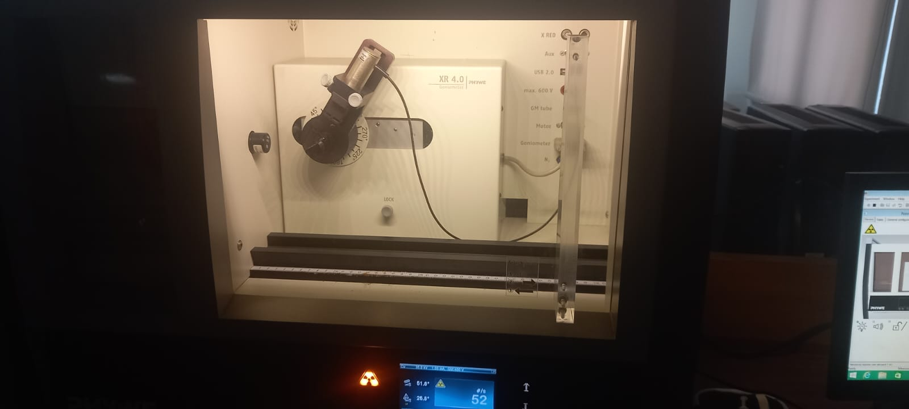

PHYWE XR 4.0 X-Ray Unit
X-Ray OFF
PHYWE XR 4.0
X-Ray Diffraction Unit
Cu X-Ray Tube
Crystal
GM Detector
1 : 2 Coupling
Turn X-Ray ON to begin.
X-Ray Spectrum
Ready
Angle
0.0°
Intensity
0
counts/s
Controls
Set the X-ray parameters and start the measurement
35
kV
1.0
mA